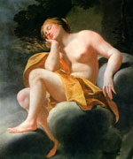

Венера, в римській міфології богиня садів, краси і любові. У давньоримській літературі ім'я Венери нерідко вживалося як синонім плодів. Деякі вчені ім'я богині переводили як "милість богів".
Після отримав широке поширення перекази про Енея Венера, почитавшаяся в деяких містах Італії як Фрутіс, була ототожнена з матір'ю Енея Афродітою. Тепер вона стала не тільки богинею краси і любові, але і покровителькою нащадків Енея і всіх римлян. На поширення культу Венери в Римі неабиякий вплив надав побудований в її честь Сицилійський храм.
Апофеозу популярності культ Венери досяг в I столітті до нашої ери, коли на її заступництво стали розраховувати знаменитий сенатор Сулла, який вірить в те, що богиня приносить йому щастя, і Гай Помпей, який побудував храм і присвятив його Венері-переможниці. Гай Юлій Цезар особливо почитав цю богиню, вважаючи її сина, Енея, предком роду Юліїв.
Венеру нагороджували такими епітетами, як милостива, що очищає, острижена, в пам'ять про мужніх римлянки, які під час війни з галлами обстригли волосся для того, щоб сплести з них канати. У літературних творах Венера виступала як богиня любові і пристрасті. На честь Венери була названа одна з планет Сонячної системи.